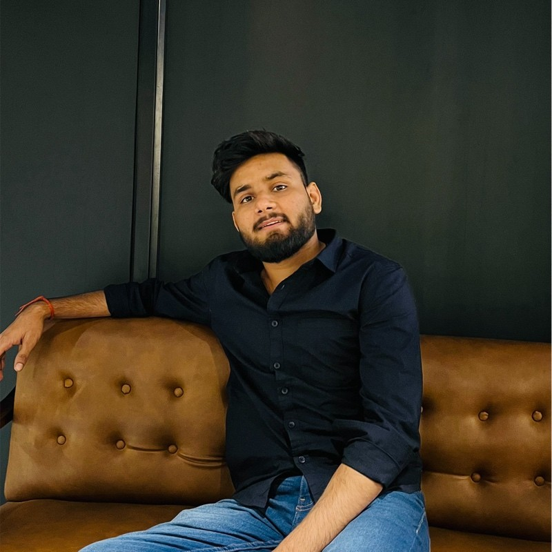

Subham Dixit
Full-Stack Developer with 3+ years shipping production web applications in TypeScript, React, Next.js, and Node.js. I own features end-to-end, from architecture and API design to frontend and deployment on AWS and Vercel.
📧 dixitsubham12@gmail.com
Tech stack
TypeScript
React / Next.js
Node.js / Express
Python (Flask)
Prisma / Postgres
AWS Lambda & S3
Vercel / Docker
Redis (Upstash)
Socket.io / Real-time
Gemini / OpenAI / LangChain
Work History
Founder & Full-Stack Developer — ReelAutopsy (Remote)
Jan 2026 – Present
Designed, built, and launched reelautopsy.com end-to-end as a solo developer — an AI-powered Instagram Reels script analyzer with paying customers.
- Built the full production stack with Next.js App Router, React, TypeScript, Prisma, Neon Postgres, Razorpay subscription billing, Upstash Redis, Resend, Google OAuth, HMAC-verified webhooks, and Vercel CI/CD.
- Architected an AI scoring pipeline (Gemini 2.5 Flash + Zod) that rates scripts across 8 dimensions including hook strength, scroll risk, CTA effectiveness, and pacing, using schema validation to guarantee structured, consistent output.
- Drove a content-led go-to-market strategy targeting US/UK creators across Twitter/X, Reddit, and creator communities.
Software Developer — Virtuelly Inc. (Remote)
Aug 2024 – Apr 2025
- Built an AI Photobooth solo using Node.js on AWS Lambda and the Replicate API, architecting an async serverless pipeline so many event attendees could generate styled AI avatars concurrently without bottlenecking; became one of the most popular activities across client events.
- Built the White Elephant game from scratch in React + Firebase, a real-time multiplayer gift-swap game deployed across 50+ live corporate events; handled core edge cases including host takeover on mid-game disconnect and locking out late joiners.
- Reduced enterprise event page load time from ~10s to ~1.4s (86% faster) by diagnosing an oversized guest-count input that forced thousands of redundant pre-rendered pricing combinations, then capping it to a realistic range.
Software Engineer — Procurenet (Remote)
Jan 2024 – May 2024
- Added Hindi-language support to an LLM content-generation pipeline by designing and tuning a new prompt that produced structured Hindi articles alongside the existing English flow.
- Built a keyword-based duplicate-content check that runs at publish time, scanning article titles and rejecting matches so duplicate-topic articles do not get published.
Software Engineer — Virtuelly Inc. (Remote)
Apr 2022 – Dec 2023
- Joined as a junior engineer on a 7-person team building enterprise virtual event platforms (Node.js, React, AWS) serving thousands of concurrent users.
- Owned the scoring logic for a real-time event platform (Node.js, Socket.io), implementing and fixing how player and session scores were calculated within live event flows.
- Worked across the existing codebase to ship features and fixes in a production environment.
Education
🎓 B.Tech in Computer Science & IT — IPS Academy (IES), Indore | 2018 – 2022 | CGPA: 8.5 / 10
Accomplishments & Awards
🏆 Ranked in the Top 2% (Rank 439) in CodeChef January Long Challenge 2021.
🏆 Finalist in Dare2Compete Recruitables 2021 (Top 6% among 100,000+ applicants).
🏆 4★ Coder on CodeChef (Rating: 1806).